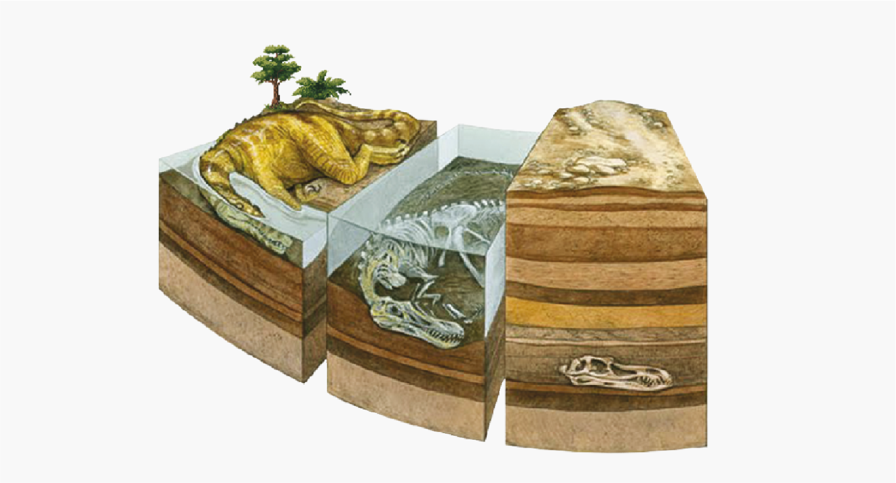
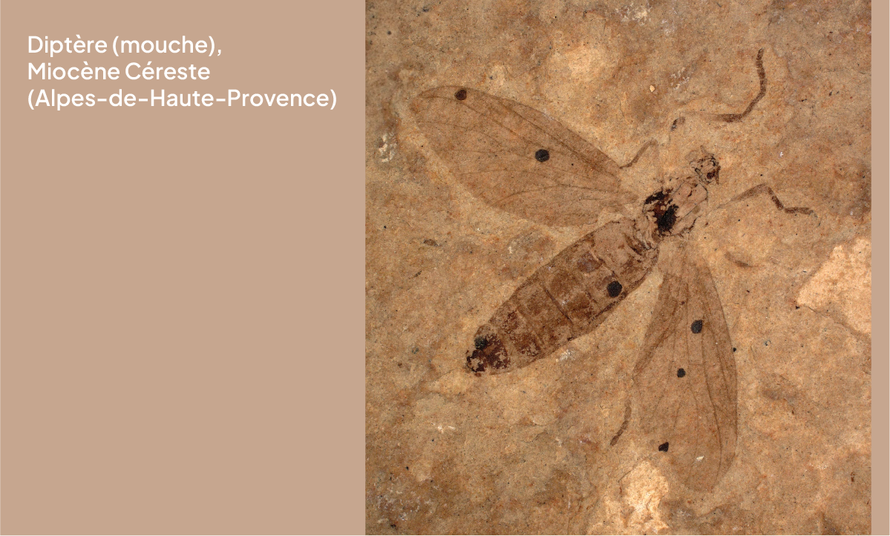
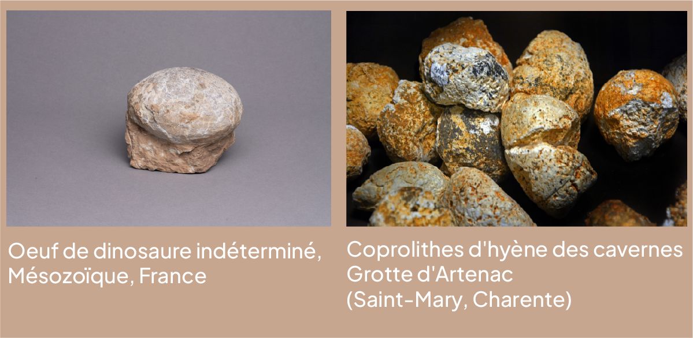

• Métamorphose de la matière organique
De l’organique au minéral
“Les corps organisés, quelles que soient leur composition et leur origine, à quelque classe qu’ils appartiennent, s’altèrent plus ou moins rapidement dès que la vie les a quittés et qu’ils restent exposés à l’action des agents atmosphériques, de l’air, de la lumière, de la chaleur et de l’humidité. Leurs éléments, l’hydrogène, l’oxygène, le carbone, l’azote et les substances terreuses qu’ils contiennent se séparent pour entrer dans de nouvelles combinaisons, ou bien retournent à l’atmosphère, à l’eau et à la Terre. Telle est, comme nous avons déjà eu occasion de le dire, la loi générale de la nature.”
Adolphe D’Archiac, Introduction à l’étude de la paléontologie stratigraphique, 1864

Dépôt à conservation exceptionnelle
A l’opposé, la chitine des insectes, ou la kératine de la peau, des poils ou des ongles, sont beaucoup plus fragiles et se fossilisent très exceptionnellement.
Les gisements dans lesquels sont trouvés ce type de fossile sont appelés Konservat-Lagerstätten (dépôt à conservation exceptionnelle).
Ils permettent d’accéder à des informations habituellement inaccessibles avec les fossiles classiques ne comprenant que des coquilles et des os, comme par exemple des 30 couleurs résiduelles de coquillages, la structure interne des os, des feuilles, du bois, ou la trace de certains organes.

Les formes fossiles
La fossilisation préserve parfois non seulement les corps, mais aussi la trace des activités.
La paléoichnologie étudie ainsi les traces de terriers, les pistes ou les empreintes fossiles, permettant de reconstituer le milieu de vie, parfois le comportement et les interactions des individus.
Il est souvent difficile d’attribuer ces traces à un organisme précis. Si certains vers, crustacés ou coquillages ont été retrouvés dans leurs terriers, il est rare de trouver l’animal fossilisé au bout de la piste laissée par ses traces de pas.
En outre, plusieurs espèces très différentes peuvent produire le même type de traces, ou inversement.
